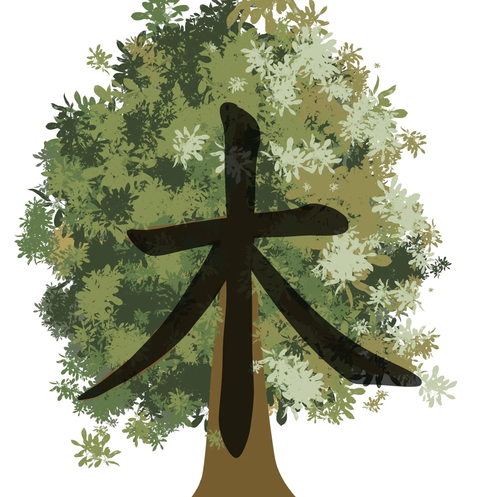
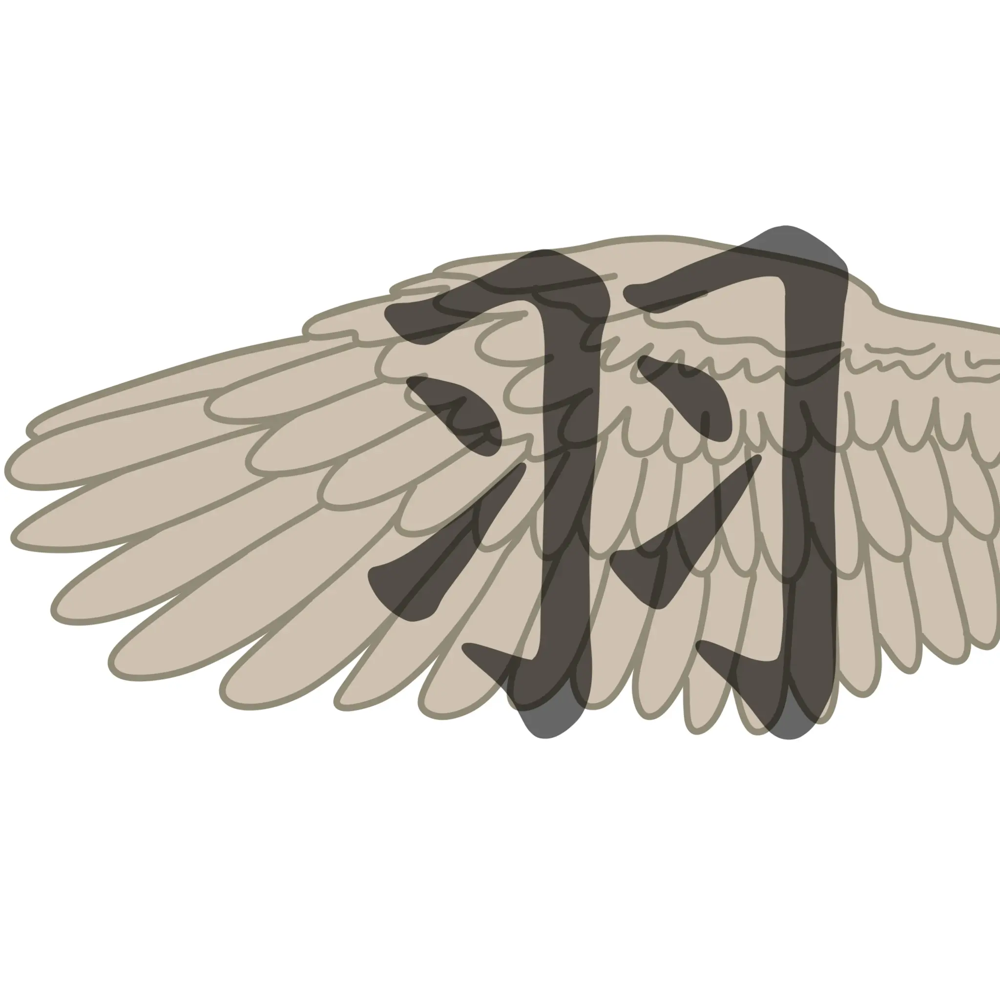
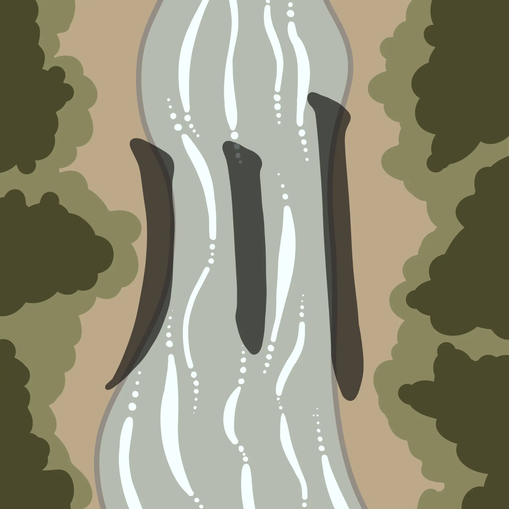
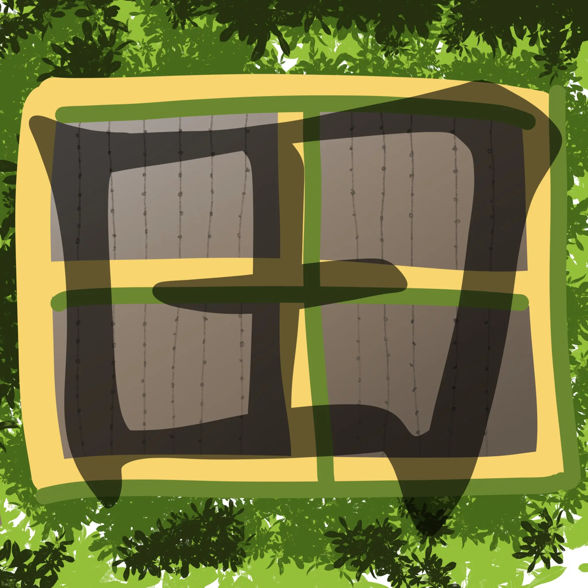
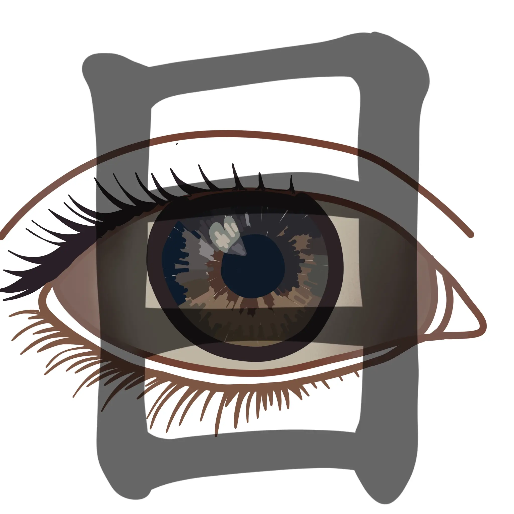
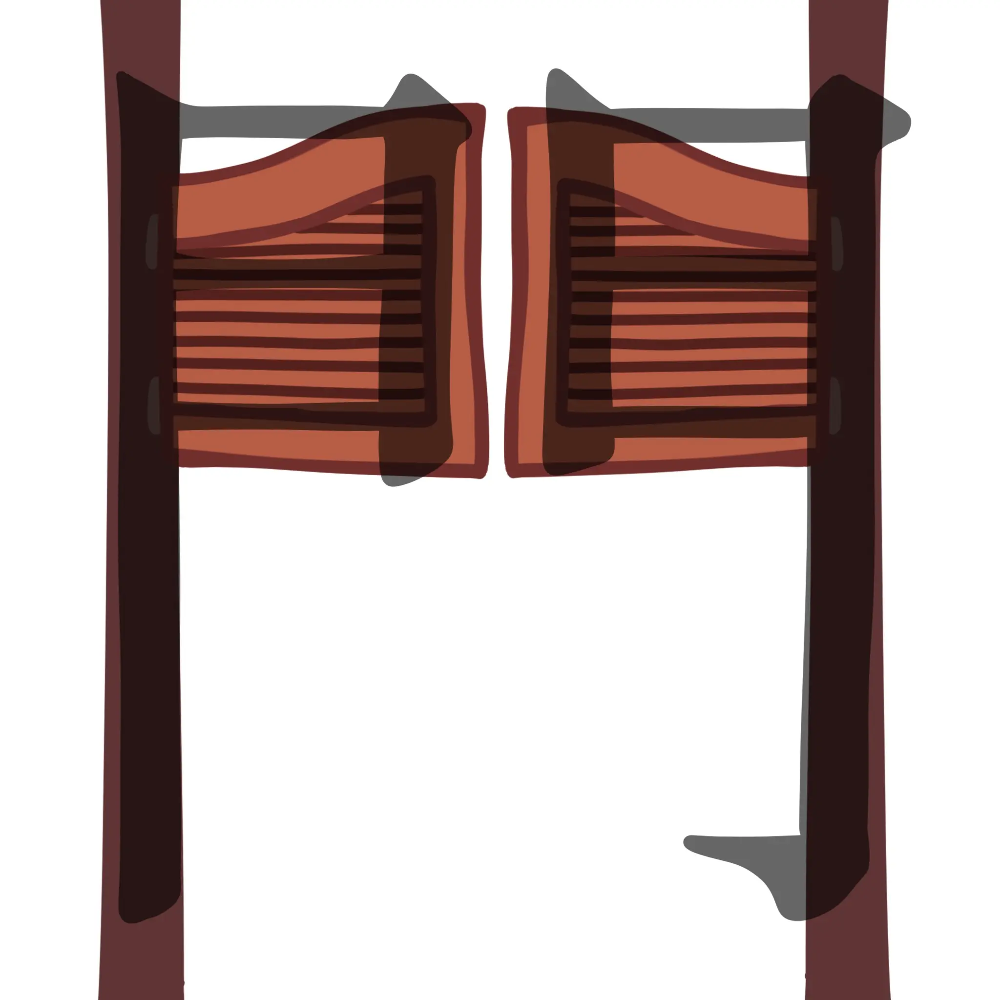

火 - Feuer
火 wird häufig für alles verwendet, was mit Hitze oder Flammen zu tun hat. Ein bekanntes Beispiel ist 火山 (kazan), das „Vulkan“ bedeutet und sich aus den Kanji für „Feuer“ und „Berg“ zusammensetzt.
Kanji (漢字) sind die aus China übernommenen Schriftzeichen des japanischen Schriftsystems und bilden neben Hiragana und Katakana die dritte und komplexeste japanische Schriftart.
Ihren Ursprung haben sie in China, wo sie bereits vor über 3000 Jahren entstanden. Die frühesten Formen chinesischer Schriftzeichen wurden auf Orakelknochen und Bronzegefäßen gefunden und entwickelten sich über Jahrhunderte zu einem umfangreichen Schriftsystem. Etwa im 4. bis 5. Jahrhundert n. Chr. gelangten die chinesischen Schriftzeichen über Korea nach Japan. Zu dieser Zeit besaß Japan noch kein eigenes Schriftsystem, weshalb die Übernahme der chinesischen Schrift einen entscheidenden kulturellen und sprachlichen Wandel bedeutete. Zunächst wurden chinesische Texte direkt gelesen und verwendet, später begannen japanische Gelehrte, die Zeichen an die Strukturen der japanischen Sprache anzupassen.
Da sich Japanisch grammatikalisch stark vom Chinesischen unterscheidet, mussten die übernommenen Schriftzeichen verändert und neu interpretiert werden. Während chinesische Schriftzeichen meist nur eine Aussprache besitzen, erhielten viele Kanji in Japan mehrere Lesungen:
On-Lesung (音読み): orientiert sich an der ursprünglichen chinesischen Aussprache
Kun-Lesung (訓読み): ein japanisches Wort wurdedem Zeichen zugeordnet.
Dadurch kann ein einzelnes Kanji je nach Kontext unterschiedlich ausgesprochen werden.
Eine Besonderheit von Kanji ist, dass sie – anders als Hiragana und Katakana – nicht nur Laute, sondern häufig ganze Bedeutungen oder Wörter darstellen. Das Zeichen 山 bedeutet beispielsweise „Berg“, 水 bedeutet „Wasser“ und 人 steht für „Mensch“. Dadurch transportieren Kanji bereits beim Lesen semantische Informationen und ermöglichen es, Texte kompakter und oft eindeutiger darzustellen.
Besonders wichtig ist diese Eindeutigkeit bei Wörtern mit gleicher Aussprache. Im Japanischen gibt es viele sogenannte Homophone – also Wörter, die gleich ausgesprochen werden, aber unterschiedliche Bedeutungen haben. Erst durch das verwendete Kanji wird klar, welches Wort gemeint ist. Ein bekanntes Beispiel ist das Verb kiku (Hiragana: きく):
|
Beide Verben werden gleich ausgesprochen, unterscheiden sich jedoch durch ihr Kanji eindeutig in ihrer Bedeutung.
Heute sind Kanji ein unverzichtbarer Bestandteil der japanischen Schriftsprache. Sie werden für die meisten Substantive, Wortstämme von Verben und Adjektiven sowie für Eigennamen verwendet. Im modernen Japan existieren mehrere tausend Kanji, wobei für den allgemeinen Sprachgebrauch offiziell 2.136 Jōyō-Kanji (常用漢字) als grundlegender Zeichensatz definiert sind. Das Erlernen von Kanji gilt daher als einer der anspruchsvollsten Schritte beim Japanischlernen.
Viele Kanji stammen ursprünglich von einfachen Bildern ab. Deshalb sehen einige Zeichen ihrer Bedeutung noch heute ähnlich. Das Kanji 火 erinnert an eine Flamme und steht für „Feuer“. Obwohl sich die Schriftzeichen im Laufe der Zeit verändert haben, kann man ihre ursprüngliche Bildform bei vielen Kanji noch erkennen. Hier findest du noch weitere Beispiele:
火 wird häufig für alles verwendet, was mit Hitze oder Flammen zu tun hat. Ein bekanntes Beispiel ist 火山 (kazan), das „Vulkan“ bedeutet und sich aus den Kanji für „Feuer“ und „Berg“ zusammensetzt.
山 ähnelt mit seinen drei Spitzen einer Bergkette. Es ist sowohl in geografischen Bezeichnungen als auch in vielen Familiennamen zu finden. In der Kombination 富士山 (Fujisan) bezeichnet es den berühmten Berg Fuji, während 登山 (tozan) „Bergsteigen“ bedeutet.

Die Form von 木 stellt stilisiert einen Stamm mit Ästen und Wurzeln dar. Es bildet die Grundlage vieler Wörter rund um Natur und Holz. Ein häufiges Beispiel ist 木陰 (kokage), das „Schatten eines Baumes“ bedeutet. Außerdem findet sich das Kanji in 森林 (shinrin), dem japanischen Wort für „Wald“.

羽 wird unter anderem in Wörtern für Vögel oder Flügel verwendet und erinnert in seiner Form an zwei nebeneinanderliegende Federn. Ein häufiges Beispiel ist 羽ばたく (habataku), das „mit den Flügeln schlagen“ oder „auffliegen“ bedeutet.

川 wird häufig in geografischen Bezeichnungen und Familiennamen verwendet. Ein bekanntes Beispiel ist 河川 (kasen), das „Flüsse und Gewässer“ bedeutet, oder der Familienname 川口 (Kawaguchi), wörtlich „Flussmündung“.

Da Reisfelder die Landschaft Japans über Jahrhunderte geprägt haben, taucht 田 in vielen Namen auf. Bekannte Beispiele sind 田中 (Tanaka, „mitten im Reisfeld“) und 山田 (Yamada, „Bergfeld“).

目 wird auch verwendet, um Nummerierungen oder Reihenfolgen auszudrücken. In der Kombination 目的 (mokuteki) bedeutet es „Ziel“ oder „Zweck“, während 注目 (chūmoku) für „Aufmerksamkeit“ oder „Beachtung“ steht.

門 stammt von der Darstellung einer traditionellen Doppeltür. Es findet sich sowohl in Wörtern als auch in Orts- und Gebäudebezeichnungen. Ein häufiges Beispiel ist 専門 (senmon), das „Fachgebiet“ oder „Spezialisierung“ bedeutet, sowie 正門 (seimon), das „Haupteingang“ oder „Haupttor“ bezeichnet.